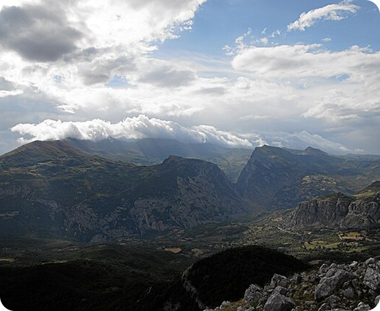

Parchi
Scopri la biodiversità dei quattro parchi: il Gran Paradiso con i suoi ghiacciai e stambecchi, l’Etna con i crateri vulcanici e le ginestre, il Pollino con il pino loricato e i lupi, e le Dolomiti Bellunesi con le cime rocciose e le stelle alpine.

Parco Nazionale del Gran Paradiso
Il primo parco nazionale italiano, con ghiacciai, prati alpini e il simbolico stambecco.

Parco dell’Etna
Il vulcano attivo più alto d’Europa, con paesaggi unici, crateri spettacolari e biodiversità vulcanica.

Parco Nazionale del Pollino
Un’area montuosa tra Basilicata e Calabria, con pini loricati, gole profonde e panorami mozzafiato.

Parco Nazionale delle Dolomiti Bellunesi
Patrimonio UNESCO con cime imponenti, fiori rari come la stella alpina e paesaggi rocciosi unici.